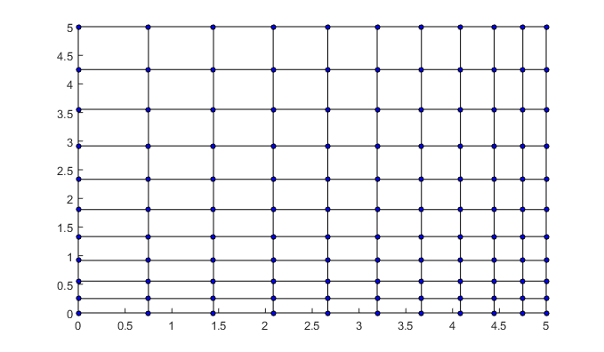
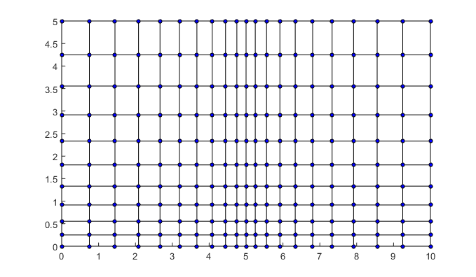
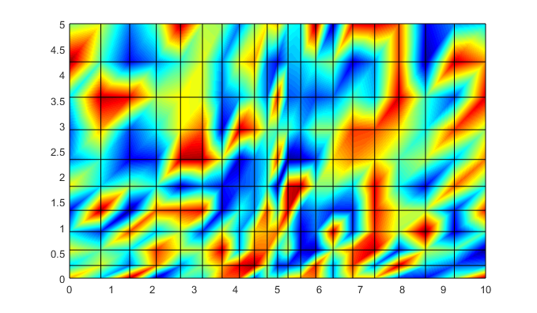

% Modified from the code published by Jay Oswald (ASU) to adopt a arithmetic series of nodes % Creates a mesh of nx by ny elements % with element ratio erx and ery in the x and y direction, element ratio is the ratio of the size(length) of the last and first element % with length of lx and ly in the x and y directions. % The origin (lower left) can be optionally specified as x0, y0. % Takes an 2x1 array (node reference coordinates) of the previous boundary selection % Try making it generalized so that it can be used in initial meshing too % ^done function [m] = boundary_defined_mesh(erx, ery, nx, ny, xf, yf, x0, y0, pX) % if origin is not specified, then set it to zero. if nargin < 7, x0 = 0; end if nargin < 8, y0 = 0; end %For the initial meshing if nargin < 9 pX = 0; s = size (pX); pnx = 0; m.num_nodes = (nx+1)*(ny+1); else s = size (pX); %previous number of elements if (rem(s(2),ny+1)), error('Number of elements in the y direction should match the initially generated mesh.'); end pnx = (s(2)/(ny+1))-1; m.num_nodes = s(2)+(nx*(ny+1)); end %length of the edge/boundary lx = abs(xf-x0); ly = abs(yf-y0); %first element size(length along x and y direction) ax = (2*lx/(nx*(erx+1))); ay = (2*ly/(ny*(ery+1))); %Constant difference in size(length along x and y direction) between two successive elements dx = ((2*lx*(erx-1))/(nx*(nx-1)*(erx+1))); dy = ((2*ly*(ery-1))/(ny*(ny-1)*(ery+1))); %Arithmetic series counter cx = 0; cy = 0; %Nodal reference coordinates. m.X = zeros(2, m.num_nodes); m.X(:,1) = [x0; y0]; for j=1:ny+1 if j>2, cy = cy+(j-2); end for i=1:(pnx+nx+1) %assigns the old node numbers to the newer one if((i<(pnx+2))&&(s(2)>1)), m.X(:,i+(j-1)*(pnx+nx+1)) = pX(:,i+(j-1)*(nx+1)); else m.X(:,i+(j-1)*(pnx+nx+1)) = [x0+(i-(pnx+1))*ax; y0+(j-1)*ay]; if i>pnx+2, cx = cx+(i-(pnx+2)); m.X(1,i+(j-1)*(pnx+nx+1)) = m.X(1,i+(j-1)*(pnx+nx+1))+ cx*dx; end if j>2, m.X(2,i+(j-1)*(pnx+nx+1)) = m.X(2,i+(j-1)*(pnx+nx+1))+ cy*dy; end end end cx = 0; end m.num_elements = (nx*ny)+(pnx*ny); m.connectivity = zeros(4, m.num_elements); for j=1:ny for i=1:(pnx+nx) % first node in element n0 = i+(j-1)*(pnx+nx+1); m.connectivity(:,i+(j-1)*(pnx+nx)) = [n0; n0+1; n0+pnx+nx+2; n0+1+pnx+nx]; end end % 4 point Gaussian quadrature rule. m.quad_points = [-1, 1, 1,-1; -1,-1, 1, 1] / sqrt(3); m.quad_points = [m.quad_points; 1,1,1,1]; % Call as mesh.draw() to draw this mesh. m.draw = @() plot_mesh(m); % Call as mesh.draw_nodal(f) to plot mesh colored by nodal value f. m.draw_nodal = @(f)plot_nodal(m,f); end function [] = plot_mesh(m) p.vertices = m.X'; p.faces = m.connectivity'; p.facecolor = 'none'; patch(p); end function[] = plot_nodal(m, f) p.vertices = m.X'; p.faces = m.connectivity'; p.facecolor = 'interp'; p.facevertexcdata = f; patch(p); end
Command Windows Prompt
>>a=boundary_defined_mesh(1/3,3,10,10,5,5); >>plot_mesh(a);

Command Windows Prompt
>>b=boundary_defined_mesh(3,3,10,10,10,5,5,0,a.X); >>plot_mesh(b)

>>g = rand(b.num_nodes,1); >>plot_nodal(b,g)
